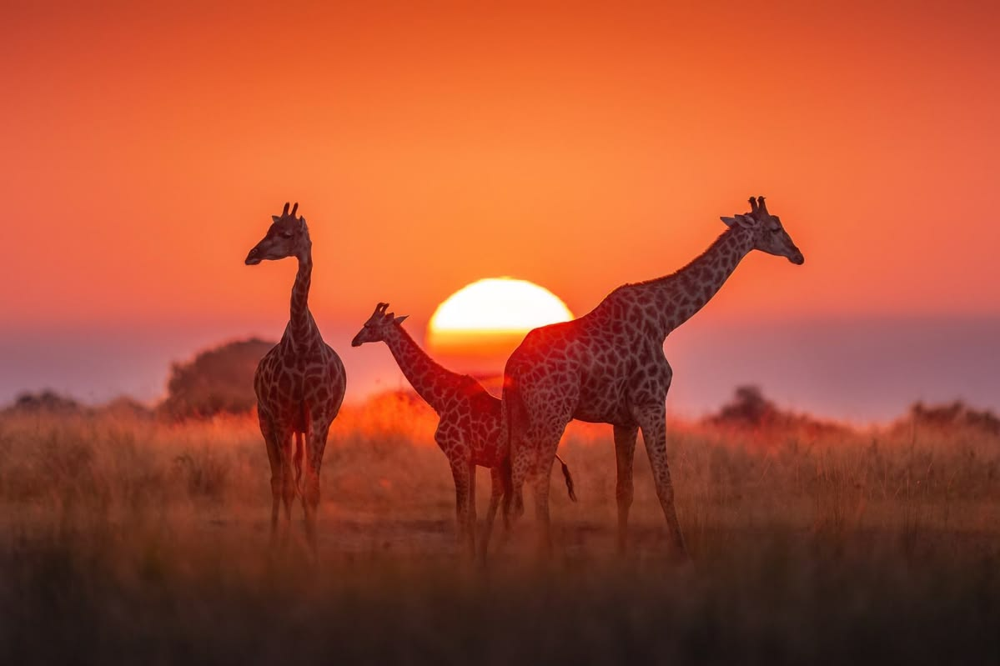

Veldu eitt af þremur svæðum til að kanna hvernig loftslagsbreytingar snerta okkur.

Bráðnun Jökla
Hækkandi hitastig valda því að bráðnun jökla verður meiri. Þetta hefur víðtækar afleiðingar, frá hækkandi sjávarborði til breytinga á vistkerfum.
Lesa meira →
Dýralíf
Loftslagsbreytingar hafa víðtæk áhrif á búsvæði og fæðukeðjur dýra. Með hækkandi hita þurfa margar tegundir að aðlagast nýjum aðstæðum eða flytjast á önnur svæði.
Lesa meira →Mannlíf
Loftslagsbreytingar hafa víðtæk áhrif á daglegt líf fólks með auknum öfgaveðrum og heilsufarsvanda. Í sumum tilfellum neyðist fólk jafnvel til að flytja búferlum.
Lesa meira →